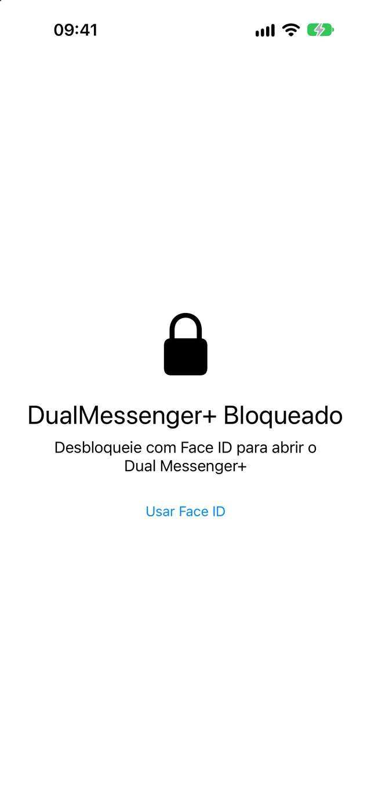
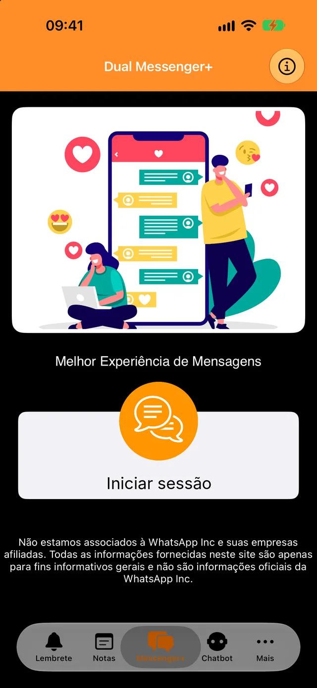
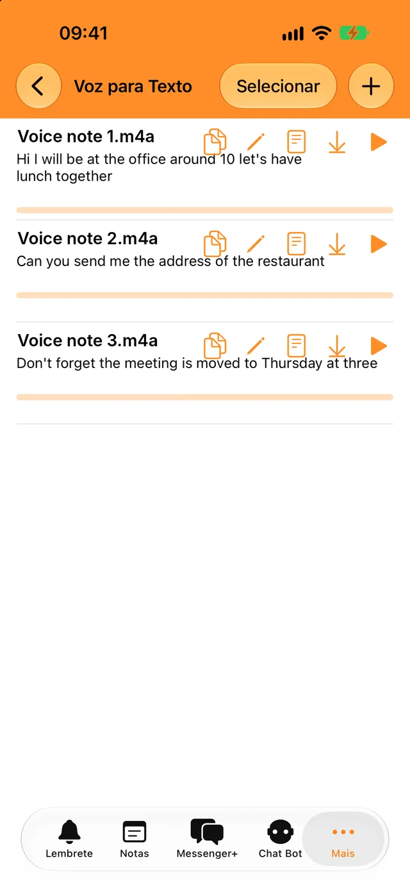
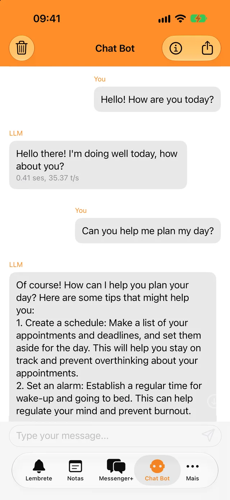
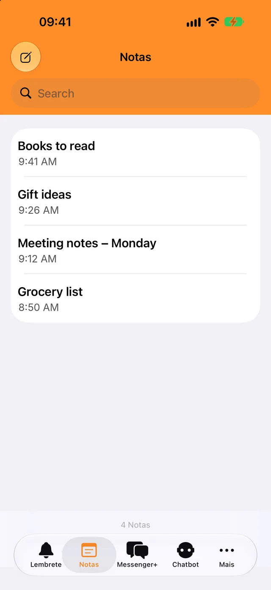

Bloqueie com Face ID ou com o seu código
Mais ninguém consegue abrir a app nem as suas conversas. Escolha se bloqueia de imediato ou ao fim de alguns minutos.
Adicione a segunda conta em segundos e mantenha as conversas de trabalho separadas das pessoais.
Descarregue gratuitamente. Para iPhone, iPad e iPhone Duo.

Um bloqueio para as suas conversas e algumas ferramentas para o dia a dia, tudo na mesma app.

Mais ninguém consegue abrir a app nem as suas conversas. Escolha se bloqueia de imediato ou ao fim de alguns minutos.

Transcreva mensagens de voz e ficheiros de áudio no seu idioma e copie o texto para onde quiser.

Faça perguntas rápidas, mesmo sem internet. As suas conversas com o bot nunca saem do telemóvel.

Aponte o que precisar, encontre-o com a pesquisa e receba uma notificação à hora do lembrete.
Precisa do telemóvel onde tem a sua segunda conta do WhatsApp, só por um momento.
Toque em Iniciar sessão. Aparece um código QR no ecrã.
Vá a Definições, depois a Dispositivos associados, e toque em Associar um dispositivo.
Aponte esse telemóvel para o código QR. As suas conversas abrem-se no Dual Messenger+.
O WhatsApp mantém a sessão iniciada num dispositivo associado desde que use o WhatsApp no seu telemóvel pelo menos uma vez a cada 14 dias.
O Dual Messenger+ não tem servidores que vejam as suas mensagens. Não há nenhuma conta para criar, e a app não tem anúncios nem rastreadores.
As notas, os lembretes, as gravações e as conversas com o bot ficam guardados no seu iPhone ou iPad.
Não nos dá um nome, um endereço de e-mail nem um número de telefone.
O Face ID e o Touch ID são geridos pelo seu dispositivo. A app nunca recebe dados biométricos.
Descarregue o Dual Messenger+ para iPhone e iPad.
Descarregar na App Store